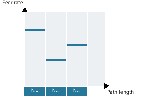
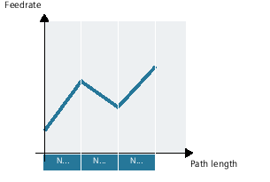
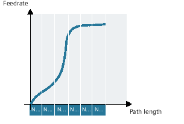
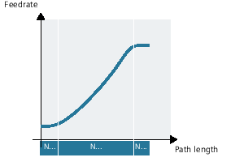

The feedrate address F defines the path feedrate as a constant value according to DIN 66025.
The feedrate characteristic is approached linearly from the current feedrate value to the programmed F value until the end of the block.
The feedrate is approached according to a cubic characteristic from the current feedrate value to the programmed F value until the end of the block. The control uses splines to connect all the feedrate values programmed non-modally that have an active FCUB. The feedrate values act here as interpolation points for calculation of the spline interpolation.
The feedrate characteristic is programmed directly via a polynomial. The polynomial coefficients are specified according to the same method used for polynomial interpolation.
Example:
F=FPO(endfeed,quadf,cubf)
endfeed, quadf and cubf are previously defined variables.
endfeed | Feedrate at block end |
quadf | Quadratic polynomial coefficient |
cubf | Cubic polynomial coefficient |
With an active FCUB, the spline is linked tangentially to the characteristic defined via FPO at the block beginning and block end.
For active compressor function (COMP...) and combining several blocks to create a spline segment, the following applies:
FNORM: | The F word of the last block in the group applies to the spline segment. |
FLIN: | The F word of the last block in the group applies to the spline segment. |
FCUB: | The generated feedrate spline deviates from the programmed end points by a maximum of the value defined in the machine data MD20172 $MC_COMPRESS_VELO_TOL. |
F=FPO(…, …, …): | These blocks are not compressed. |